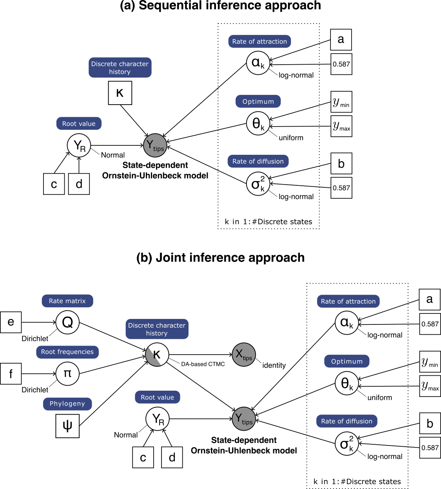
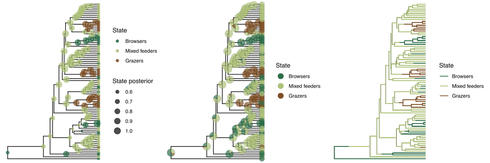
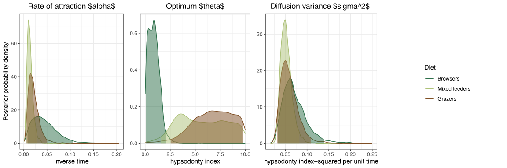

This tutorial demonstrates how to specify an Ornstein-Uhlenbeck model with state-dependent rates of attraction ($\alpha$), optima ($\theta$), and diffusion variances ($\sigma^2$) to model continuous-character adaptation to different discrete character states. We provide two probabilistic graphical models for this tutorial, which correspond to sequential and joint inference approaches respectively. After specifying the model, you will estimate the parameters of the state-dependent Ornstein-Uhlenbeck process for each character state.
Previously, we used a relaxed OU model to infer adaptation of a continuous trait (in terms of optimum shifts) without specifying a potential cause (or correlated variable) for such adaptation. However, we may be interested in testing specific hypotheses of continuous trait adaptation to different discrete character states.
In this tutorial, we will specify the state-dependent OU model described in Lau et al. In review. Under this model, any or all of the OU parameters ($\alpha$, $\theta$, $\sigma^2$) depend on the state of a discrete character that is also evolving on the phylogeny. We must therefore specify a model that includes both the continuous trait and the discrete character. Our state-dependent OU model implementation supports (1) sequential inference of OU parameters conditionally on a discrete character history and (2) joint inference of discrete character history and OU parameters. Therefore, we will demonstrate how to (1) read in a character history (sequential inference approach), and (2) model discrete character evolution using a continuous-time Markov chain distribution (joint inference approach).

In this tutorial, we use a time-calibrated phylogeny, the hypsodonty index, and the diet of 82 ruminants (Artiodactyla) from { % citet toljagic2018 % } as data.
First, we read in the phylogenetic tree.
tree <- readTrees("data/artiodactyla.tree")[1]
Next, we read in the discrete character data.
We have to exclude all other characters that we are not interested in and only include our focal character.
This can be done in RevBayes using the member methods .excludeAll() and .includeCharacter().
disc <- readDiscreteCharacterData("data/artiodactyla_diet.nex")
disc.excludeAll()
disc.includeCharacter( 1 ) # diet is the first (and only) character
num_disc_states <- disc.getStateDescriptions().size()
Similarly, we read in the continuous trait data.
cont <- readContinuousCharacterData("data/artiodactyla_hypsodonty_index.nex")
cont.excludeAll()
cont.includeCharacter( 1 ) # hypsodonty index is the first (and only) character
We initialize two vectors for moves and monitors respectively. We initialize an adaptable variance multivariate normal (AVMVN) kernel to improve mixing of MCMC traces. After specifying each parameter, we add the parameter to the kernel. After all parameters are added, we add the kernel to the moves,
moves = VectorMoves()
monitors = VectorMonitors()
avmvn = mvAVMVN(weight=20, waitBeforeLearning=500, waitBeforeUsing=1000)
In a joint inference approach, we model the discrete character evolution using a continuous-time Markove chain distribution, which is defined by an instantaneous-rate matrix ($Q$).
Assuming all character states have equal transition rates, we specify an Mk model (Lewis 2001).
Q <- fnJC( num_disc_states )
We specify a scaling factor for the transition rates.
lambda ~ dnLognormal(ln(0.4), 0.05)
moves.append( mvScale(lambda, weight=1.0) )
avmvn_rates.addVariable(lambda)
Now, we specify a data augmentation-based CTMC model. We use this CTMC model because the branch histories are sampled (instead of integrated out). This allows us to retrieve instances of the character history, which will be used in the state-dependent OU model.
X ~ dnPhyloCTMCDASiteIID(tree, Q, branchRates=lambda, type="Standard", nSites=1)
X.setValue(disc)
We include proposals for changing the character history at the nodes and on the branches.
moves.append( mvCharacterHistory(ctmc=X, qmap_site=Q, graph="node", proposal="rejection", weight=400.0) )
moves.append( mvCharacterHistory(ctmc=X, qmap_site=Q, graph="branch", proposal="rejection", weight=100.0) )
We retrieve the character history from the CTMC model, which will be passed to the state-dependent OU model later.
char_hist := X.characterHistories()
Alternative: Sequential inference approach
Alternatively, we can infer the character history in prior steps and read in the output as follows. Note that the character history should be in simmap format.
char_hist = readCharacterHistory("data/artiodactyla_character_history.tree")[1]
Here, we set up a state-dependent OU model where all parameters are state-dependent. The prior distributions we use below are empirically motivated. First, we retrieve some information about the age of the tree and the among-species variance of the continuous trait data.
root_age <- tree.rootAge()
across_species_variance <- cont.var( 1 )
For the optimum parameter ($\theta$), we use a uniform distribution that covers more than the range of continuous trait observations.
for (i in 1:num_disc_states){
theta[i] ~ dnUniform(0, 10)
moves.append(mvSlide(theta[i], weight = 1.0) )
avmvn_cont.addVariable(theta[i])
}
There are two common ways to specify the rates of attraction ($\alpha$) and the diffusion variance ($\sigma^2$). First, by putting priors directly on the parameters:
for (i in 1:num_disc_states){
a <- ln(2) / root_age
alpha[i] ~ dnLognormal(ln(a), 0.587405) # the median of the phylogenetic half-life is equal to one tree height
moves.append(mvScale(alpha[i], weight = 1.0) )
avmvn_cont.addVariable(alpha[i])
s <- across_species_variance * 2 * a
sigma2[i] ~ dnLognormal(ln(s), 0.587405)
moves.append(mvScale(sigma2[i], weight = 1.0) )
avmvn_cont.addVariable(sigma2[i])
}
Alternatively, by putting hyper-priors on transformed parameters phylogenetic half-life ($t_{1/2}$) and stationary variance ($V_y$). The advantage of using hyper-priors on transformed parameters is that these parameters have clear biological meaning and can be interpreted more easily (see { % citet Hansen1997 % }).
for (i in 1:num_disc_states){
t_half[i] ~ dnLognormal(ln(root_age), 0.587405) # the median of the phylogenetic half-life is equal to one tree height
moves.append(mvScale(t_half[i], weight = 1.0) )
avmvn_cont.addVariable(t_half[i])
alpha[i] := abs(ln(2)/t_half[i])
Vy[i] ~ dnLognormal(ln(across_species_variance), 0.587405) # the median of the stationary variance is equal to the across-species variance
moves.append(mvScale(Vy[i], weight = 3.0) )
avmvn_cont.addVariable(Vy[i])
sigma2[i] := Vy[i] * 2 * alpha[i]
}
Finally, We add the AVMVN kernel to the moves.
moves.append( avmvn )
Now, we are ready to set up the state-dependent OU model.
We can choose between three possible root treatments, which is the assumption of the continuous trait value at the root.
Note that the option parameter should only be used when the phylogenetic tree contains fossil tips, which in our example does not.
Therefore, we choose the simplest option optimum, which assumes that the root value is the same as the optimum.
We assume that the discrete character states at the root is at stationary frequencies by not specifying the argument rootFrequencies.
Y ~ dnPhyloOUSD(char_hist, theta=theta, rootTreatment="optimum", alpha=alpha, sigma=sigma2^0.5)
Y.clamp(cont)
We create a workspace object for the entire model with model().
Remember that workspace objects are initialized with the = operator, and are not themselves part of the Bayesian graphical model.
The model() function traverses the entire model graph and finds all the nodes in the model that we specified.
This object provides a convenient way to refer to the whole model object, rather than just a single DAG node.
mymodel = model(Y)
For our MCMC analysis, we need to set up a vector of monitors to record the states of our Markov chain.
First, we will initialize the model monitor using the mnModel function.
This creates a new monitor variable that will output the states for all model parameters when passed into a MCMC function.
monitors.append( mnModel(filename="output/trace.log", printgen=10) )
Additionally, create a screen monitor that will report the states of
specified variables to the screen with mnScreen:
monitors.append( mnScreen(printgen=1000, theta) )
Finally, we include a monitor for the character history.
monitors.append( mnFile( char_hist, filename="output/character_histories.trees", printgen=10 ) )
With a fully specified model, a set of monitors, and a set of moves, we
can now set up the MCMC algorithm that will sample parameter values in
proportion to their posterior probability. The mcmc() function will
create our MCMC object:
mymcmc = mcmc(mymodel, monitors, moves, nruns=2, combine="mixed")
Now, run the MCMC:
mymcmc.run(generations=50000, burnin=200)
Since the character history output is in simmap format, we will convert it to ancestral map format in R and summarize it in RevBayes. Start R in the main directory for this analysis and then type the following commands:
source("scripts/plot_state_dependent_OU_helper.R")
tree <- read.tree("data/artiodactyla.tree")
simmap_to_ancStates("output/character_histories.trees", "output/character_histories.log", tree)
Now, go back to RevBayes and type the following commands:
file_in <- "output/character_histories.log"
file_out <- "output/anc_states.tre"
anc_states = readAncestralStateTrace(file_in)
anc_tree = ancestralStateTree(tree=tree,
ancestral_state_trace_vector=anc_states,
include_start_states=false,
file=file_out,
summary_statistic="MAP",
reconstruction="marginal",
burnin=0.1,
nStates=3,
site=1)
q()
Note that nStates should always be >= 3 even if your character is binary
Finally, open R again to plot the objects. First, we plot the ancestral states at nodes.
library(cowplot)
library(RevGadgets)
source("scripts/plot_state_dependent_OU_helper.R")
tree <- readTrees("data/artiodactyle.tree")
# plot the objects
ase <- processAncStates("output/anc_states.tre",
state_labels=c("0"="Browsers", "1"="Mixed feeders", "2"="Grazers"))
p1 <- plotAncStatesMAP(t = ase,
tip_labels = FALSE,
node_color_as = "state",
node_color = c("Browsers"="#2c6e49", "Mixed feeders"="#adc178", "Grazers"="#7f4f24"),
node_size = c(1, 3),
tip_states = TRUE,
tip_states_size = 2,
state_transparency = 0.7,
) +
# modify legend location using ggplot2
theme(legend.position.inside = c(0.6,0.8))
p2 <- plotAncStatesPie(t = ase,
pie_colors = c("Browsers"="#2c6e49", "Mixed feeders"="#adc178", "Grazers"="#7f4f24"),
node_pie_size = 3,
tip_pies = TRUE,
tip_pie_size = 2
state_transparency = 0.7,
tip_labels = FALSE,
) +
# modify legend location using ggplot2
theme(legend.position.inside = c(0.6,0.8))
Then, we plot the branch histories with maximumn a posteriori probabilities.
char_hist <- read.table("output/sdou_joint/charhist.log", header = TRUE)
simmaps <- read.simmap(text=char_hist$char_hist, format = "phylip")
processed_simmaps <- processStochMaps(tree=tree, simmap = simmaps, states = c("0", "1", "2"))
colnames(processed_MAP)[6] = "Browsers"
colnames(processed_MAP)[7] = "Mixed feeders"
colnames(processed_MAP)[8] = "Grazers"
p3 <- plotStochMaps(tree=tree, maps = processed_MAP, color_by = "MAP",
colors = c("Browsers"="#2c6e49", "Mixed feeders"="#adc178", "Grazers"="#7f4f24"),
tip_labels = FALSE,
line_width=0.5
)
# combine all maps
history_plots <- plot_grid(p1, p2, p3, ncol=3)
Lastly, we plot the posterior probabilities of OU parameters.
trace <- readTrace("output/trace.log", burnin = 0.1)
color_diet <- c("#2c6e49", "#adc178", "#7f4f24")
# plot alpha
names(color_diet) <- c("alpha[1]", "alpha[2]", "alpha[3]")
p4 <- plotTrace(trace, vars = c("alpha[1]", "alpha[2]", "alpha[3]"), color = color_diet)[[1]] +
ggtitle("Rate of attraction $alpha$") +
theme(legend.position = "none") +
xlab("inverse time") +
ylab("Posterior probability density")
# plot theta
names(color_diet) <- c("theta[1]", "theta[2]", "theta[3]")
p5 <- plotTrace(trace, vars = c("theta[1]", "theta[2]", "theta[3]"), color = color_diet)[[1]] +
ggtitle("Optimum $theta$") +
theme(legend.position = "none",
axis.title.y = element_blank()) +
xlab("hypsodonty index")
# plot sigma^2
names(color_diet) <- c("sigma2[1]", "sigma2[2]", "sigma2[3]")
p6 <- plotTrace(trace, vars = c("sigma2[1]", "sigma2[2]", "sigma2[3]"), color = color_diet)[[1]] +
ggtitle("Diffusion variance") +
theme(axis.title.y = element_blank()) +
xlab("hypsodonty index-squared per unit time") +
theme(legend.position = "none",
axis.title.y = element_blank())
# plot legend
legend <- get_legend2(p6 + theme(legend.position = "left",
legend.box.margin = margin(0, 0, 0, 12))
+ guides(color = guide_legend(title='Diet'),
fill=guide_legend(title='Diet'))
+ scale_fill_discrete(name = "Diet")
+ scale_color_manual(values=c("#2c6e49", "#adc178", "#7f4f24"),
name="Diet",
labels=c("Browsers", "Mixed feeders", "Grazers")))
ou_plots <- plot_grid(p4, p5, p6, legend, ncol=4)
Here we show the results of our example analysis.
 